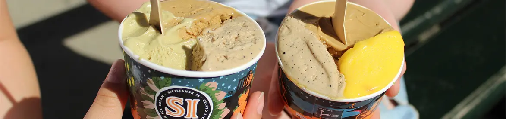

Siciliansk is på Vesterbro
Skydebanegade 3, 1709 København

Åbningstider
Vi åbner igen sæsonen 31. marts kl. 13-18.
Åbningstider april:
mandag-fredag 13-18
lørdag-søndag 12-18
Åbningstider maj-august:
Alle dage 12-21
Åbningstider september:
mandag-fredag 13-18
lørdag-søndag 12-18
Priser i butik
Vælg 3 slags is uanset størrelsen
Vaffel eller bæger
Lille................................................30
Mellem........................................40
Stor................................................50
Lille boks....................................50
Stor boks....................................50
Pose......4....Vaffel.......5......Bæger.......3